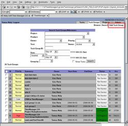
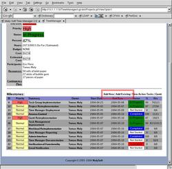
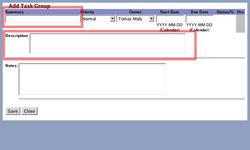
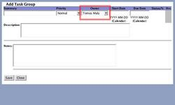
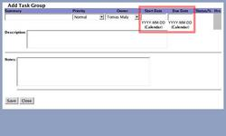
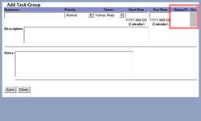
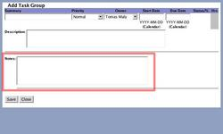

Task Groups and Milestones provide a way to group tasks into a goal, typically used in a project. It helps you see things in a broader perspective than by looking at every individual task that it consists of.

- Add Task Group Window
- Add Milestone Window
- Adding Task Groups from Tasks
- Summary / Description
- Owner
- Start / Due Dates
- Status, Percent, Hours
- Notes
- Add Task Group Window:
- Add Milestone Window:
- Adding Task Groups from Tasks:
- Summary / Description:
- Owner:
- Start / Due Dates:
- Status, Percent, Hours:
- Notes:
To open a task group window, on clicks on the 'Add Task Group' navigational button from the Task Groups Console.

To get to the window to add a milestone (a task group that is a part of a project), you can go to the project overview screen and click on 'Add New' in the 'Milestones' section.

Task Groups may be added and linked to tasks from the task window itself.

The summary specifies a short text (that is displayed when browsing or when in a project) describing what the goal of the task group is. A more detailed text is put into the 'description' section.
The owner specifies who has the rights to add new or existing tasks to the list. They can also remove them, once added. All others can only see the task group, without modifications.
The start and due dates specify when the task group should be considered completed. You can use the calendar to set the dates. There is no enforced restriction, if a task's dates fit out of the bounds of the task group. In that case, it is up to the task group owner to either readjust the task group's dates, or the task's.
The status field is automatically calculated from the tasks that make up the task group. The various levels are identical to that of a tasks status levels. The percent and hours (actual vs. estimated) completed is also auto-calculated.
Arbitrary notes can be kept to better define the goal, brainstorms, or perhaps complication in the completion.
